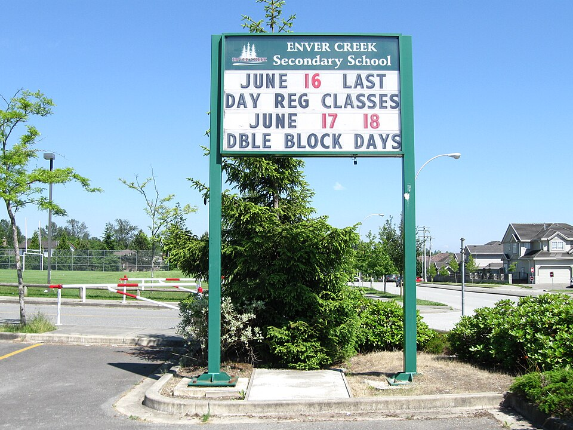

학교 앞 안내판에 적힌 학사 일정(이미지) · 사진: Leoboudv / Wikimedia Commons, CC BY-SA 3.0
국제학교 학사 일정(Academic Calendar) — 8월에 시작하는 1년, 한국과 반 년이 어긋납니다
1. 먼저, 1년의 모양
학교마다 다르지만 북반구의 국제학교는 대체로 8월 말에서 9월 초에 새 학년을 시작해 이듬해 6월 무렵에 마칩니다. 그래서 한 학년도를 두 해를 붙여 적습니다. 안내문에 "2026-27 학년도"라고 적혀 있으면 2026년 8월에 시작해 2027년 6월에 끝나는 1년을 가리킵니다.
※ 예외가 있습니다. 호주·뉴질랜드계 학교는 1월 무렵, 인도 현지 교육과정 학교는 봄에 시작하는 경우가 많습니다. 같은 도시 안에서도 학교마다 다를 수 있으니, 후보 학교마다 시작하는 달을 적어 두고 비교하시기 바랍니다.
1년을 나누는 방식은 보통 세 가지입니다.
· 세메스터(Semester)제 — 1년을 두 학기로. 미국식 학교에서 흔합니다.
· 트라이미스터(Trimester)제 — 1년을 세 구간으로. 성적이 더 자주 정리됩니다.
· 텀(Term)제 — 영국식. 세 텀으로 나누고 각 텀 가운데 짧은 반학기 방학(half-term)이 들어가는 경우가 많습니다.
2. 한국 학교와 무엇이 다른가
| 항목 | 한국 학교 | 국제학교(일반적인 경우) |
|---|---|---|
| 학년 시작 | 3월 | 8월 말~9월 초 |
| 학년도 표기 | 한 해 숫자(2026학년도) | 두 해를 붙여 적습니다(2026-27) |
| 학기 구분 | 1·2학기 | 세메스터·트라이미스터·텀 중 하나 |
| 긴 방학 | 여름(7~8월)·겨울(12~2월) | 여름(6~8월)이 가장 길고, 겨울·봄 방학이 따로 |
| 중간 방학 | 거의 없음 | 가을 중간방학·반학기 방학이 중간중간 들어갑니다 |
| 다음 학년 준비 | 겨울방학 무렵 | 봄(1~4월 무렵)에 한꺼번에 몰립니다 |
맨 아랫줄이 한국 학부모님들이 가장 많이 놓치는 지점입니다. 아래에서 따로 보겠습니다.
3. 반 년이 어긋나서 실제로 생기는 일 다섯 가지
· ① 전학 시기 — 한국에서 2월에 학년을 마치고 나오면 현지 학년은 이미 절반이 지난 2학기 중간입니다. 반대로 8월에 맞춰 나가려면 한국 학교에서 1학기만 다니고 나오게 됩니다. 어느 쪽이든 공백이 생기므로, 미리 어느 쪽 공백을 감수할지를 정하고 움직이셔야 합니다. → 편입·전학 총정리
· ② 학년 배치 — 국제학교는 보통 생년월일 기준으로 학년을 정합니다. 한국 학년을 그대로 가져가지 못하고 한 학년 아래로 배치되는 경우가 드물지 않습니다. 이것은 실력 평가가 아니라 달력 차이입니다. → 학년 체계 총정리
· ③ 한국 방문 — 설과 추석은 현지 학사 일정과 무관합니다. 그 주에 수업이 그대로 있는 경우가 많고, 자리를 비우면 미인정 결석으로 남을 수 있습니다. → 출결 규정
· ④ 여름 일정 — 국제학교의 여름방학은 6월에 시작하는 경우가 많습니다. 한국의 여름 특강이나 캠프는 7~8월에 몰려 있어, 6월 한 달이 비는 가정이 많습니다. 이 한 달을 어떻게 쓰느냐로 다음 학년 출발이 달라집니다. → 여름방학·서머스쿨 활용법
· ⑤ 귀국 — 6월에 현지 학년을 마치고 한국 학교로 들어가면 한국은 1학기 중간입니다. 귀국이 예정돼 있다면 마치는 학년을 역산해 두셔야 합니다.
4. 봄에 한꺼번에 몰리는 것들
국제학교의 1년에서 가장 바쁜 시기는 가을이 아니라 봄입니다. 다음 학년에 관한 거의 모든 결정이 이때 내려지기 때문입니다.
| 봄에 오는 일 | 놓치면 생기는 일 |
|---|---|
| 재등록 | 기한을 넘기면 다음 학년 자리가 유지되지 않을 수 있습니다 |
| 과목 신청 | 종이 한 장이 내년 시간표를 정합니다 |
| 모의고사(Mock) | 결과가 예측 성적의 근거가 됩니다 |
| 외부 시험 | IB·IGCSE 등은 5~6월에 치르는 것으로 안내됩니다 |
| 학부모 상담 | 다음 학년 배치를 조정할 수 있는 마지막 기회가 됩니다 |
이 다섯 가지가 두세 달 안에 겹칩니다. 그래서 봄에 가족 여행이나 장기 한국 방문을 넣으면 서류 기한과 시험이 동시에 걸립니다. 반대로 이 구조를 알고 계시면 겨울방학이 다음 학년을 준비하기 가장 좋은 때라는 것도 보입니다.
5. 자주 하는 오해 다섯 가지
· ① "학기 중간에 가도 금방 따라잡겠지" — 과목이 2년짜리 코스로 묶인 구간(IGCSE·IB 디플로마)에서는 중간 합류 자체가 어렵습니다.
· ② "방학이 한국보다 기니까 여유가 있겠네" — 방학 수가 많을 뿐 한 번에 쉬는 기간은 짧은 경우가 많습니다. 가을 중간방학은 일주일 안팎입니다.
· ③ "성적표는 학년 말에 한 번 나오겠지" — 학기 구분에 따라 두 번에서 세 번 나오고, 중간 보고가 따로 있는 학교도 있습니다. → 성적표 읽는 법
· ④ "학사 일정은 매년 비슷하겠지" — 달라집니다. 현지 공휴일, 시험 일정, 공사 일정에 따라 해마다 바뀝니다. 작년 달력으로 항공권을 잡으면 어긋납니다.
· ⑤ "학교가 알아서 알려 주겠지" — 학사 일정표는 보통 학기 전에 한 번 공개하고 끝입니다. 그 뒤의 변경은 주간 안내 메일 속에 한 줄로 들어옵니다. → 학습 플랫폼·시간표 읽는 법
6. 가정에서 할 네 가지
· ① 학사 일정표를 1년 치로 받아 둡니다. 학교 홈페이지나 학부모 포털에 PDF로 올라옵니다. 학기 시작·끝, 방학, 시험 주간, 상담 주간이 한 장에 들어 있습니다.
· ② 가족 달력에 네 가지만 먼저 표시합니다. 긴 방학 / 시험 주간 / 상담 주간 / 서류 기한(재등록·과목 신청). 이 네 가지만 찍어도 일정 사고의 대부분이 사라집니다.
· ③ 항공권은 그다음에 잡습니다. 특히 귀국 일정과 한국 방문은 학사 일정표가 공개된 뒤에 정하세요. 비용을 조금 더 쓰더라도 결석을 만드는 것보다 낫습니다.
· ④ 공부 계획을 "학기"가 아니라 "구간"으로 세웁니다. 학기 첫 2주는 적응, 중간은 과제 관리, 시험 2~3주 전은 점검. 한국의 중간·기말 리듬을 그대로 가져오면 어긋납니다.
📌 과외를 붙이는 시점도 이 달력 위에서 정하는 편이 효율이 좋습니다. 가장 효과가 큰 구간은 학기 첫 2~3주(새 과목의 기준을 잡는 때)와 시험 8주 전(만회가 가능한 마지막 구간)입니다. 반대로 시험 직전 한 주에 몰아서 잡는 것은 가장 효과가 낮습니다. 아이가 다니는 학교의 학사 일정표를 상담 때 함께 보여 주시면, 그 달력에 맞춰 계획을 세워 드립니다.
관련 검색어: 국제학교학사일정 · 국제학교방학 · 국제학교학기 · 국제학교전학시기 · 국제학교학년도
정리
국제학교의 1년은 보통 8월 말에 시작해 이듬해 6월에 끝나고, 그래서 학년도를 두 해를 붙여(2026-27) 적습니다. 한국 학년도와 반 년이 어긋나기 때문에 전학 시기·학년 배치·한국 방문·여름 일정·귀국 시점이 전부 영향을 받습니다. 그리고 다음 학년에 관한 결정은 봄에 한꺼번에 몰립니다. 가정에서 하실 일은 간단합니다. 학사 일정표 한 장을 받아, 긴 방학·시험 주간·상담 주간·서류 기한 네 가지를 가족 달력에 먼저 찍는 것입니다. 그 위에 공부 계획을 얹으면 한 해가 훨씬 수월해집니다. 지금 아이의 학교 달력에 맞춰 계획을 세우고 싶으시면, 30분 무료 수업으로 현재 위치부터 확인해 보시기 바랍니다. (학사 일정과 학기 구분은 학교·연도마다 다르니 반드시 학교 안내를 직접 확인하세요.)